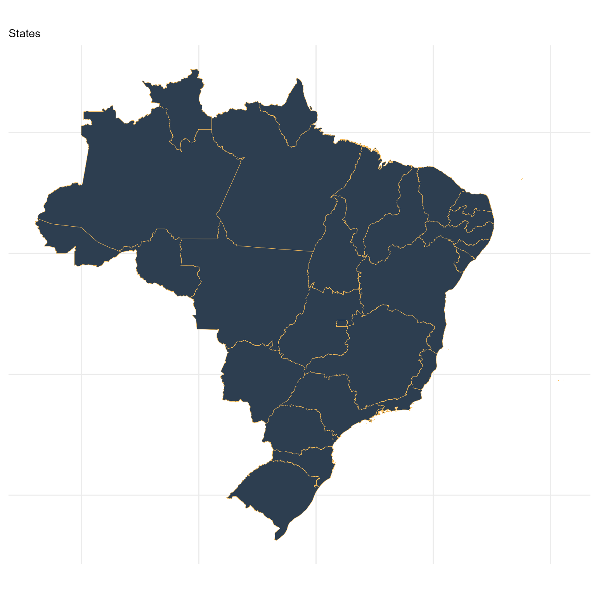
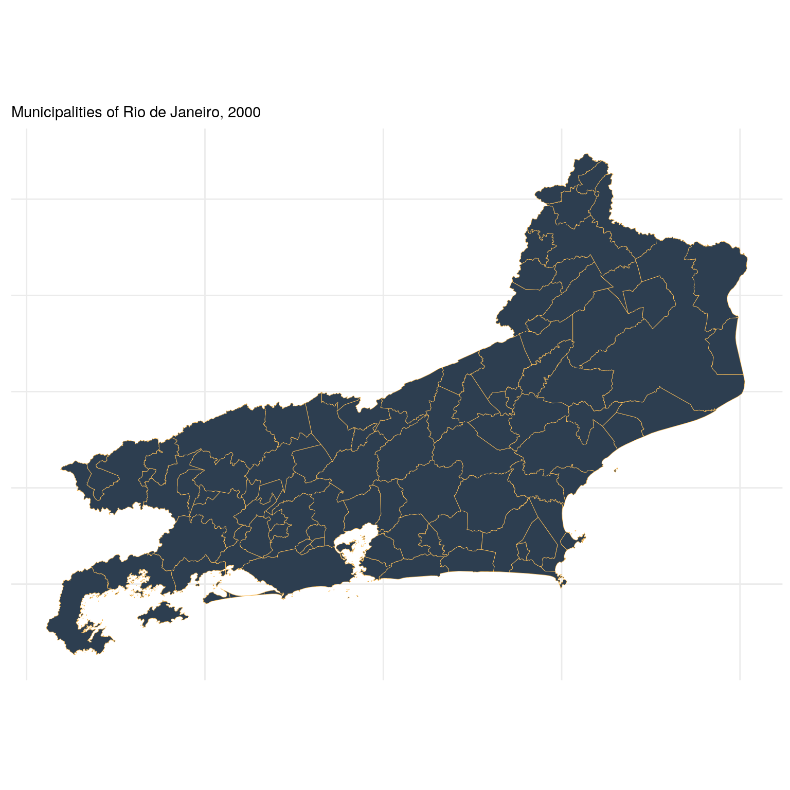
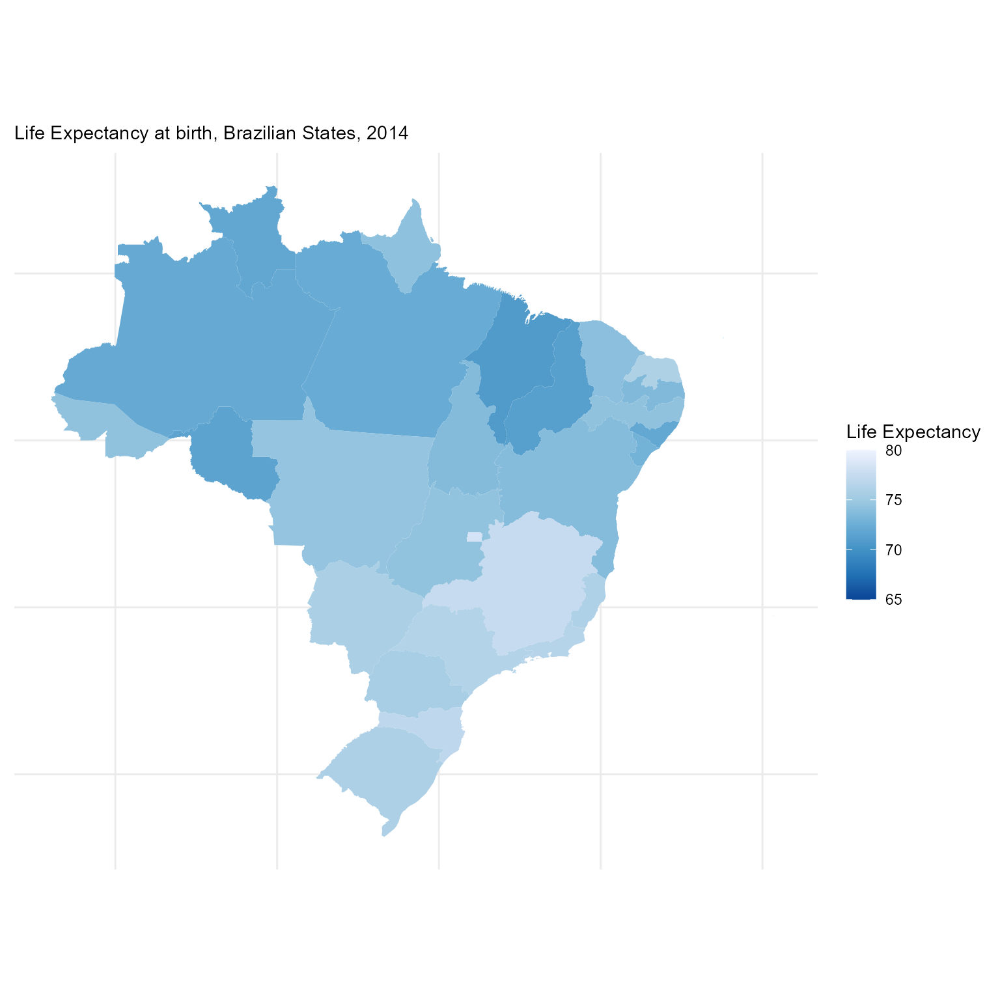

The geobr package provides quick and easy access to official spatial data sets of Brazil. The syntax of all geobr functions operate on a simple logic that allows users to easily download a wide variety of data sets with updated geometries and harmonized attributes and geographic projections across geographies and years. This vignette presents a quick intro to geobr.
You can install geobr from CRAN or the development version to use the latest features.
# From CRAN install.packages("geobr") # Development version utils::remove.packages('geobr') devtools::install_github("ipeaGIT/geobr", subdir = "r-package")
Now let’s load the libraries we’ll use in this vignette.
The geobr package covers 21 spatial data sets, including a variety of political-administrative and statistical areas used in Brazil. You can view what data sets are available using the list_geobr() function.
# Available data sets datasets <- list_geobr() print(datasets, n=21) #> # A tibble: 23 x 4 #> `function` geography years source #> <chr> <chr> <chr> <chr> #> 1 `read_country` Country 1872, 1900, 1911, 1920, 1933… IBGE #> 2 `read_region` Region 2000, 2001, 2010, 2013, 2014… IBGE #> 3 `read_state` States 1872, 1900, 1911, 1920, 1933… IBGE #> 4 `read_meso_regi… Meso region 2000, 2001, 2010, 2013, 2014… IBGE #> 5 `read_micro_reg… Micro region 2000, 2001, 2010, 2013, 2014… IBGE #> 6 `read_intermedi… Intermediate region 2017, 2019 IBGE #> 7 `read_immediate… Immediate region 2017, 2019 IBGE #> 8 `read_weighting… Census weighting ar… 2010 IBGE #> 9 `read_census_tr… Census tract (setor… 2000, 2010, 2017 IBGE #> 10 `read_municipal… Municipality seats … 1872, 1900, 1911, 1920, 1933… IBGE #> 11 `read_statistic… Statistical Grid of… 2010 IBGE #> 12 `read_metro_are… Metropolitan areas 1970, 2001, 2002, 2003, 2005… IBGE #> 13 `read_urban_are… Urban footprints 2005, 2015 IBGE #> 14 `read_amazon` Brazil's Legal Amaz… 2012 MMA #> 15 `read_biomes` Biomes 2004, 2019 IBGE #> 16 `read_conservat… Environmental Conse… 201909 MMA #> 17 `read_disaster_… Disaster risk areas 2010 CEMADEN … #> 18 `read_indigenou… Indigenous lands 201907 FUNAI #> 19 `read_semiarid` Semi Arid region 2005, 2017 IBGE #> 20 `read_health_fa… Health facilities 2015 CNES, Da… #> 21 `read_health_re… Health regions 1991, 1994, 1997, 2001, 2005… DataSUS #> # … with 2 more rows
sf objectsThe syntax of all geobr functions operate one the same logic, so the code to download the data becomes intuitive for the user. Here are a few examples.
Download an specific geographic area at a given year
# State of Sergige state <- read_state(code_state="SE", year=2018) # Municipality of Sao Paulo muni <- read_municipality( code_muni = 3550308, year=2010 )
Download all geographic areas within a state at a given year
# All municipalities in the state of Alagoas muni <- read_municipality(code_muni= "AL", year=2007) # All census tracts in the state of Rio de Janeiro cntr <- read_census_tract(code_tract = "RJ", year = 2010)
If the paramter code_ is not passed to the function, geobr returns the data for the whole country by default.
meso <- read_intermediate_region(year=2017) states <- read_state(year=2019)
All functions to download polygon data such as states, municipalites etc. have a simplified argument. When simplified = FALSE, geobr will return the original data set with high resolution at detailed geographic scale (see documentation). By default, however, simplified = TRUE and geobr returns data set geometries with simplified borders to improve speed of downloading and plotting the data.
Once you’ve downloaded the data, it is really simple to plot maps using ggplot2.
# Remove plot axis no_axis <- theme(axis.title=element_blank(), axis.text=element_blank(), axis.ticks=element_blank()) # Plot all Brazilian states ggplot() + geom_sf(data=states, fill="#2D3E50", color="#FEBF57", size=.15, show.legend = FALSE) + labs(subtitle="States", size=8) + theme_minimal() + no_axis

Plot all the municipalities of a particular state, such as Rio de Janeiro:
library(ggplot2) # Download all municipalities of Rio all_muni <- read_municipality( code_muni = "RJ", year= 2010) # plot ggplot() + geom_sf(data=all_muni, fill="#2D3E50", color="#FEBF57", size=.15, show.legend = FALSE) + labs(subtitle="Municipalities of Rio de Janeiro, 2000", size=8) + theme_minimal() + no_axis

The next step is to combine data from geobr package with other data sets to create thematic maps. In this example, we will be using data from the (Atlas of Human Development (a project of our colleagues at Ipea))[https://atlasbrasil.org.br/] to create a choropleth map showing the spatial variation of Life Expectancy at birth across Brazilian states.
First, we need a data.frame with estimates of Life Expectancy and merge it to our spatial database. The two-digit abbreviation of state name is our key column to join these two databases.
# Read data.frame with life expectancy data df <- utils::read.csv(system.file("extdata/br_states_lifexpect2017.csv", package = "geobr"), encoding = "UTF-8") states$name_state <- tolower(states$name_state) df$uf <- tolower(df$uf) # join the databases states <- dplyr::left_join(states, df, by = c("name_state" = "uf"))
ggplot() + geom_sf(data=states, aes(fill=ESPVIDA2017), color= NA, size=.15) + labs(subtitle="Life Expectancy at birth, Brazilian States, 2014", size=8) + scale_fill_distiller(palette = "Blues", name="Life Expectancy", limits = c(65,80)) + theme_minimal() + no_axis
